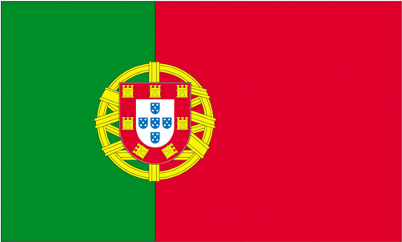

| Goalkeepers |
| 1
|  Manuel Neuer Manuel Neuer |
27/03/1986 |
2023 |
| 35
| Alexander Nubel |
30/09/1996 |
2025 |
| 39
| Ron-Thorben Hoffmann |
04/04/1999 |
2021 |
| Defenders |
| 4
| Niklas Sule |
03/09/1995 |
2022 |
| 5
|  Benjamin Pavard Benjamin Pavard |
28/03/1996 |
2024 |
| 17
| Jérôme Boateng |
03/09/1988 |
2021 |
| 19
|  Alphonso Davies Alphonso Davies |
02/11/2000 |
2025 |
| 20
| Bouna Sarr |
31/01/1992 |
2024 |
| 21
| Lucas Hernández |
14/02/1996 |
2024 |
| 23
| Tanguy Nianzou |
07/06/2002 |
2024 |
| 27
|  David Alaba David Alaba |
24/06/1992 |
2021 |
| Midfielders |
| 6
| Joshua Kimmich |
08/02/1995 |
2023 |
| 8
|  Javi Martinez Javi Martinez |
02/09/1988 |
2021 |
| 18
| Leon Goretzka |
06/02/1995 |
2022 |
| 22
| Marc Roca |
26/11/1996 |
2025 |
| 24
| Corentin Tolisso |
03/08/1994 |
2022 |
| 28
| Tiago Dantas (on loan) |
24/12/2000 |
2021 |
| Forwards |
| 7
| Serge Gnabry |
14/07/1995 |
2023 |
| 9
|  Robert Lewandowski Robert Lewandowski |
21/08/1988 |
2021 |
| 10
| Leroy Sané |
11/01/1996 |
2025 |
| 11
|  Douglas Costa de Souza (on loan) Douglas Costa de Souza (on loan) |
14/09/1990 |
2021 |
| 13
|  Eric Maxim Choupo-Moting Eric Maxim Choupo-Moting |
23/03/1989 |
2021 |
| 25
| Thomas Müller |
13/09/1989 |
2023 |
| 29
| Kingsley Coman |
13/06/1996 |
2023 |
| 42
| Jamal Musiala |
26/02/2003 |
2022 |